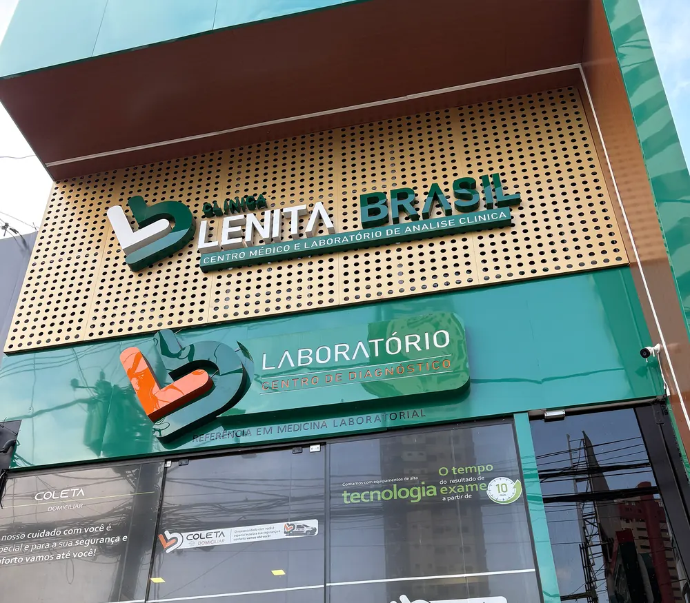
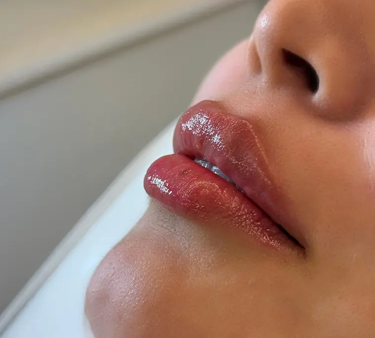
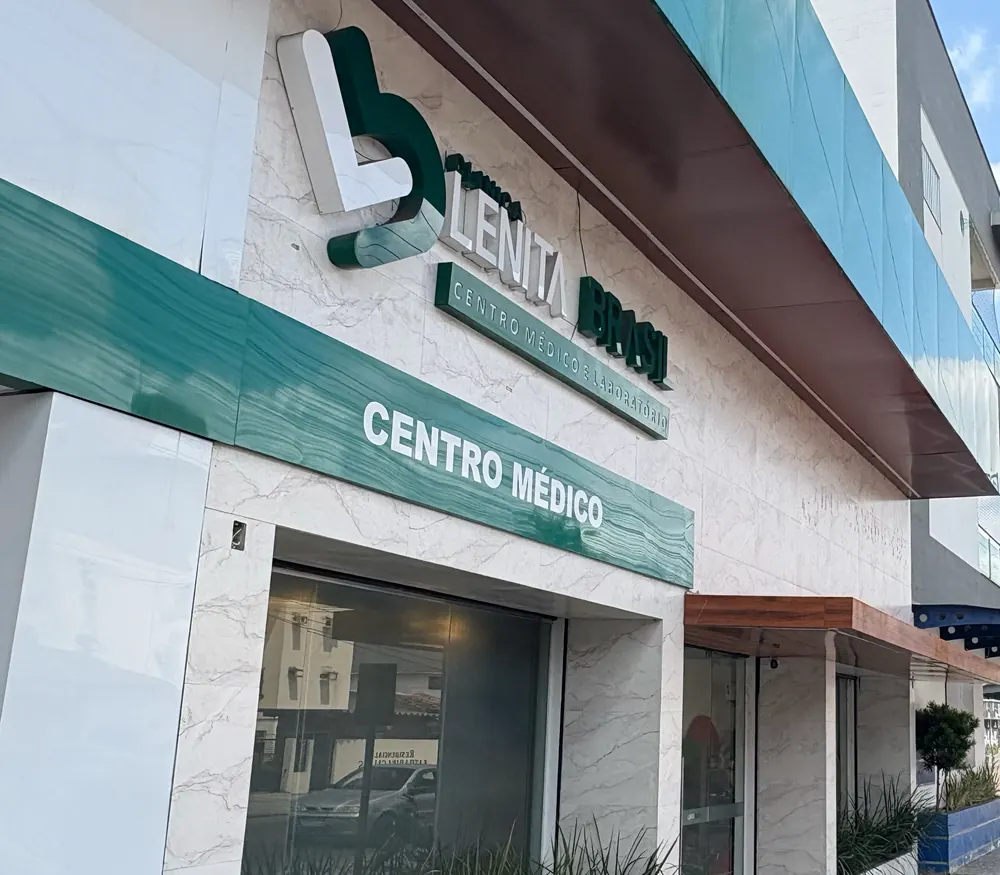

R. Bernal do Couto, nº 75 - Umarizal
Saiba como chegar - Unidade Belém (abre em nova aba)Agende sua consulta. A equipe responde pelo WhatsApp e informa unidades, horários e valores.
Médica à frente da clínica e dos laboratórios, a Dra. Lenita Brasil atende pacientes em consulta e acompanha a oferta de exames laboratoriais.
No consultório, a conversa vem antes da indicação: ela ouve sua queixa, avalia seu histórico e explica as opções disponíveis.
Na consulta, a Dra. Lenita Brasil ouve sua queixa, avalia a pele, o cabelo e o seu histórico, e explica as opções de tratamento, com benefícios, riscos e alternativas. Só então a indicação é feita.
A Clínica Lenita Brasil possui duas unidades: uma em Belém e outra em Castanhal.
Os procedimentos são realizados após avaliação médica. A indicação, o número de sessões e os cuidados dependem de cada caso.
Conheça os procedimentos oferecidos na clínica.

Aplicação em regiões da face definidas na avaliação.
A toxina botulínica é aplicada em regiões da face como testa, entre as sobrancelhas e área dos olhos, conforme a avaliação médica.
A aplicação ponto a ponto considera a anatomia do rosto. A indicação depende da avaliação médica.
Perguntar sobre Toxina botulínica
Aplicação de ácido hialurônico nos lábios.
O preenchimento labial é feito com ácido hialurônico e considera o formato do rosto, do sorriso e as proporções de cada pessoa.
A indicação depende da avaliação médica.
Perguntar sobre Preenchimento labialEquipamento que cria microcanais na pele.
A MesojectGun é um equipamento que usa pulsos de energia para criar microcanais na pele, por onde ativos podem ser aplicados.
O protocolo é definido após avaliação médica. A indicação depende da avaliação médica.
Perguntar sobre MesojectGunProtocolo para couro cabeludo e fios, definido em consulta.
A terapia capilar é voltada ao couro cabeludo e aos fios.
Na consulta, a Dra. Lenita Brasil avalia o caso e define se há indicação e qual protocolo seguir. A indicação depende da avaliação médica.
Perguntar sobre Terapia capilarAvaliação da pele e protocolo definido caso a caso.
O tratamento de manchas começa com a avaliação médica da pele e do histórico.
O protocolo pode incluir dermocosméticos e tecnologias específicas, conforme cada caso. A indicação depende da avaliação médica.
Perguntar sobre Tratamento de manchasFios posicionados conforme o planejamento médico.
O posicionamento dos fios de PDO segue o planejamento feito na avaliação médica, considerando a anatomia do rosto.
A indicação depende da avaliação médica.
Perguntar sobre Fios de PDOEquipamento de ultrassom micro e macrofocado.
O Ultraformer MPT é um equipamento de ultrassom micro e macrofocado, usado sem cortes e sem cirurgia.
A indicação e o número de sessões dependem da avaliação médica.
Perguntar sobre Ultraformer MPTEquipamento de laser aplicado na pele.
O Lavieen é um equipamento de laser aplicado na pele.
A indicação, o número de sessões e os cuidados dependem da avaliação da pele e do histórico de cada pessoa.
Perguntar sobre Laser LavieenToda indicação parte de avaliação médica. A resposta é individual, não há garantia de resultado e podem existir riscos e efeitos adversos, explicados na consulta. Imagens ilustrativas.
Prefere conversar antes de escolher? Fale com a equipe pelo WhatsApp (abre o WhatsApp em nova aba)
Os Laboratórios Lenita Brasil têm duas unidades, em Belém e Castanhal. A equipe informa unidades, horários e valores no atendimento pelo WhatsApp.

R. Bernal do Couto, nº 75 - Umarizal
Saiba como chegar - Unidade Belém (abre em nova aba)
Av. Marechal Deodoro, nº 368 - Ianetama
Saiba como chegar - Unidade Castanhal (abre em nova aba)Veja abaixo a lista de exames convencionais disponíveis. A equipe informa no atendimento pelo WhatsApp se é preciso pedido médico, qual o preparo (como jejum) e como os resultados são entregues.
Em dúvida sobre qual exame? Fale com a equipe pelo WhatsApp (abre o WhatsApp em nova aba)
Toque no botão e envie a mensagem pronta pelo WhatsApp.
A equipe informa unidades, horários e valores.
Consulta: avaliação médica antes de qualquer indicação, com riscos e alternativas explicados. Exame: informe se tem pedido médico e pergunte sobre o preparo (como jejum).
Em Belém (R. Bernal do Couto, nº 75 - Umarizal) e em Castanhal (Av. Marechal Deodoro, nº 368 - Ianetama), no Pará.
Para consulta, pelo botão "Agendar consulta" desta página; para exames, pelos botões da seção Exames. Ambos abrem o WhatsApp com a mensagem pronta. É só enviar.
Os valores são informados pela equipe no atendimento pelo WhatsApp.
A equipe informa no atendimento pelo WhatsApp.
A equipe informa no atendimento pelo WhatsApp.
Depende do exame. A equipe informa o preparo ao agendar.
A equipe informa o prazo e a forma de entrega ao agendar.
Depende. A avaliação médica vem primeiro, e a Dra. Lenita Brasil define se há indicação no seu caso.
Não. Procedimentos têm resposta individual e podem ter riscos e efeitos adversos. Por isso, benefícios, riscos e alternativas são explicados na consulta, antes de qualquer decisão.
Não encontrou o que procurava? A equipe responde pelo WhatsApp.
Agendar consultaAbra o WhatsApp com a mensagem pronta ou preencha o formulário.
Ou entre em contato pelo WhatsApp